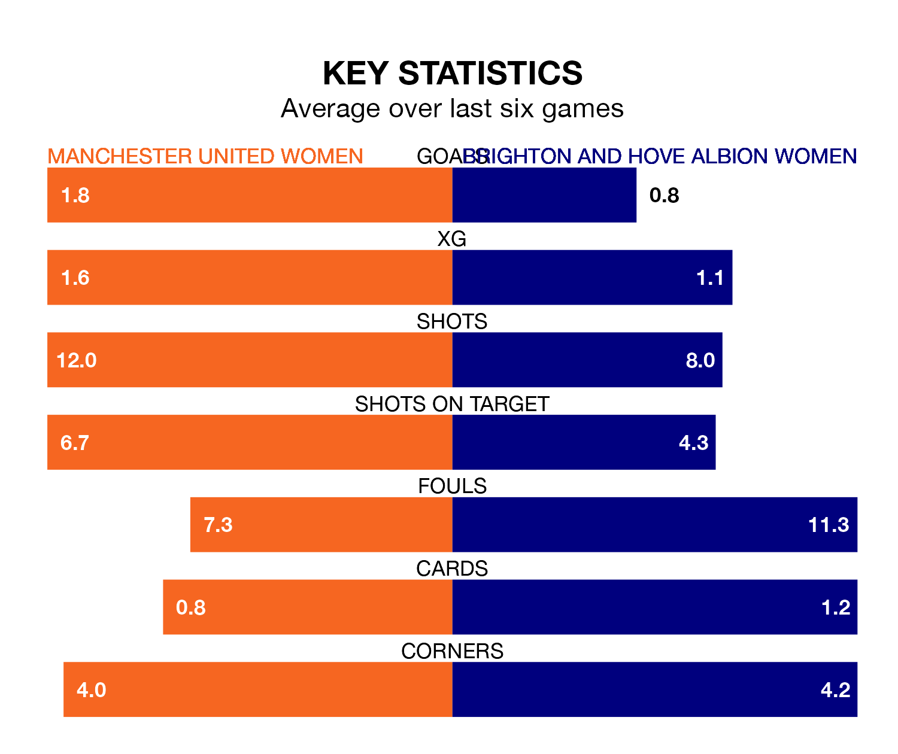

Mid-season relegation candidates Brighton and Hove Albion Women face a challenge away against high-flying Manchester United Women at the Leigh Sports Village Stadium on Sunday.
Brighton and Hove Albion Women are 10th in the FA Women's Super League table, and have picked up three wins and two draws in their 12 games to date.
The Red Devils, meanwhile, are fourth in the standings with 21 points, having won six and drawn three, and are 10 points behind table-toppers Chelsea Women.
With 28 goals in 12 games so far this season, Manchester United are the league's joint-third-highest scorers with 2.3 goals per game. And they are conceding fewer than average, letting in 15 goals at a rate of 1.2 per game.
Brighton & Hove Albion, meanwhile, are below average scorers, with 1.1 goals per game, compared to a league average of 1.7. They have conceded 2.2 goals per game.
In Mary Earps, the Red Devils can rely on one of the league's safest pair of hands. She has kept four clean sheets in her 12 appearances this season, and only one other 'keeper – Manchester City Women's Khiara Keating – has been able to prevent the opposition scoring on more occasions in FA Women's Super League.
In the Seagulls's net, Sophie Baggaley has one clean sheet in 11 games. She has conceded a goal every 47 minutes, 60% more often than the 77 minutes between goals for Earps.
In the last 10 years, Manchester United and Brighton & Hove Albion have played each other on 12 occasions. Manchester United won nine of them, Brighton & Hove Albion one, and they drew twice.
On average, the Red Devils scored 2.3 goals and the Seagulls 0.6 in those matches.
Their last meeting was on November 5, when they played out a 2-2 draw.
The hosts are in mixed form in FA Women's Super League, with three wins and three losses from their last six games.
With a win and a draw over that period, the away side's form is worse – they have taken four points from 18, compared to Manchester United's nine.
Manchester United's last match was on January 28, a 2-1 win against Aston Villa Women, with Nikita Parris getting the goals for the Red Devils.
Brighton & Hove Albion lost 3-0 against Chelsea Women last time out, on January 27.
Updated: 09:21 (UTC), 30/01/24